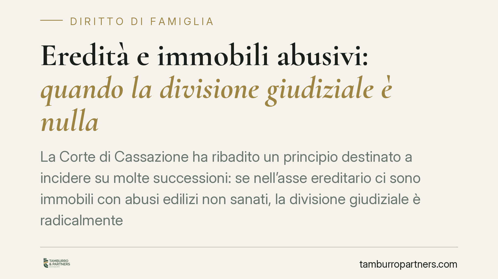

Eredità e immobili abusivi: quando la divisione giudiziale è nulla
La Corte di Cassazione ha ribadito un principio destinato a incidere su molte successioni: se nell'asse ereditario ci sono immobili con abusi edilizi non sanati, la divisione giudiziale è radicalmente nulla. Una nullità che il giudice può rilevare d'ufficio in ogni fase del processo, anche per la prima volta in Cassazione. Per gli eredi, un rischio concreto di vedere annullato l'intero procedimento.

Il principio affermato
La Corte di Cassazione ha confermato un orientamento ormai consolidato: la divisione giudiziale di un compendio ereditario che comprenda immobili affetti da abusi edilizi non sanati è affetta da nullità radicale.
Non si tratta di un vizio marginale. La nullità è definita "formale" perché discende direttamente dalla legge urbanistica, che vieta gli atti tra vivi aventi ad oggetto immobili privi dei titoli edilizi richiesti. Il divieto, secondo la Cassazione, si estende anche agli atti di divisione, compresi quelli disposti dal giudice.
Inquadramento normativo
Il riferimento è alla disciplina urbanistica in materia di commerciabilità degli immobili. L'art. 46 del d.P.R. 380/2001 (Testo Unico dell'Edilizia) e, per gli immobili più risalenti, l'art. 40 della legge 47/1985, sanzionano con la nullità gli atti tra vivi che abbiano ad oggetto diritti reali su fabbricati costruiti senza titolo abilitativo o non sanati.
La questione a lungo dibattuta riguardava l'applicabilità di queste norme alla divisione. Le Sezioni Unite (sent. n. 25021/2019) hanno chiarito che la divisione, pur avendo natura dichiarativa, rientra tra gli atti soggetti al divieto: anche lo scioglimento della comunione ereditaria richiede la regolarità urbanistica dei beni divisi.
Due conseguenze rilevanti. La prima: la nullità è rilevabile d'ufficio, cioè il giudice deve dichiararla anche senza istanza di parte. La seconda: è deducibile in ogni stato e grado del giudizio, quindi persino per la prima volta davanti alla Corte di Cassazione. Non esistono preclusioni processuali capaci di sanarla.
Cosa cambia per gli eredi
Le implicazioni pratiche sono concrete e spesso sottovalutate.
Molte comunioni ereditarie riguardano fabbricati datati, ristrutturati nel tempo senza sempre curare la corretta documentazione: verande chiuse, soppalchi, tramezzi spostati, cambi di destinazione d'uso. Difformità che a un occhio non esperto sembrano irrilevanti possono bastare a travolgere l'intero giudizio di divisione.
Il rischio è duplice. Da un lato, tempo e costi: un procedimento che si trascina per anni può essere dichiarato nullo all'ultimo grado, azzerando il risultato. Dall'altro, la paralisi del bene: finché l'immobile resta abusivo, la comunione non può essere sciolta giudizialmente, e i comproprietari restano vincolati tra loro.
La questione tocca in modo particolare il coniuge superstite e gli eredi che intendano uscire dalla comunione contro la volontà degli altri. Senza divisione valida, non c'è assegnazione dei beni né liquidazione delle quote.
È bene chiarire un punto: la nullità colpisce la divisione, non la successione. Gli eredi restano tali e conservano i loro diritti sull'asse. Ciò che manca è lo strumento per ripartire concretamente i beni irregolari.
Cosa fare in concreto
- Verificate la regolarità urbanistica prima di agire. Prima di avviare o proseguire una causa di divisione, acquisite visure catastali, titoli edilizi e, dove serve, una relazione tecnica di un professionista abilitato che attesti la conformità dello stato di fatto.
- Sanate gli abusi sanabili. Ove possibile, presentate le pratiche di sanatoria (accertamento di conformità o condono, secondo i casi) prima di portare la divisione davanti al giudice. La regolarizzazione elimina la causa di nullità.
- Valutate la divisione amichevole. Anche la divisione contrattuale è soggetta al divieto, ma consente maggiore flessibilità nella gestione dei tempi e nelle scelte tecniche rispetto al procedimento giudiziale.
- Non trascurate gli immobili più vecchi. I fabbricati anteriori al 1967 e quelli oggetto di interventi risalenti richiedono verifiche specifiche sulla documentazione applicabile ratione temporis.
- Fate emergere la questione per tempo. Poiché la nullità è rilevabile in ogni grado, affrontarla nella fase iniziale evita di scoprire il vizio dopo anni di contenzioso.
Consigliamo un esame preventivo della posizione urbanistica di tutti gli immobili caduti in successione: è il passaggio che più incide sulla tenuta dell'intero procedimento.
---
*Contributo informativo a cura di Tamburro & Partners - Avv. Giuseppe Tamburro. Non costituisce parere legale.*
Ogni famiglia ha il suo equilibrio.
Separazione, divorzio, affidamento, assegno: se vuoi un confronto riservato su una specifica situazione, scrivi allo studio. Ti rispondiamo entro un giorno lavorativo.